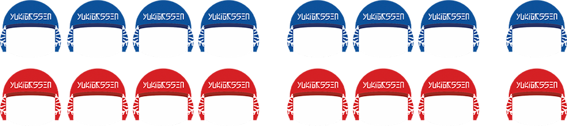

Краткая история:
Юкигассен появился в 1987 году в японском город Собецу для привлечения туристов в зимнее время года. Для этих же целей Юкигассен стали проводить и в норвежском городе Вардё в 2005.
В России Юкигассен с 2006 года. Первым городом, проводящим эту игру, стал Мурманск.
В настоящее время Юкигассен уже есть в Австралии, Армении, Бельгии, Канаде, Китае, Нидерландах, Норвегии, России, США, Словаки, Таиланде, Финляндии, Швеции, Японии.
Ежегодные открытые соревнования в России проходят в Мурманске (и области), Ноябрьске и Екатеринбурге. Также игру уже опробовали в Архангельске, Москве, Санкт-Петербурге, Благовещенске и Красноярске.
Краткие правила:
Юкигассен – это игра между двумя командами. Команда состоит из 4 нападающих, 3 защитников и капитана. Защитники обеспечивают снежками нападающих, которые атакуют противников. Капитан находится за линией поля и помогает игрокам своей команды, подсказывая время и обстановку игры. Также у команды есть возможность иметь двух запасных игроков.

Все активные игроки находятся на поле размером 36х10м, где расположены защитные баррикады. Две домашних баррикады, за которыми находятся корзины со снежками, четыре обычных и одна центральная, которая по размерам равна двум обычным.
Защитники могут передвигаться по всей территории поля, в то время как нападающим нельзя заходить за свою домашнюю линию. По этой причине только защитники могут доставать снежки из своей корзины.
На один тайм, который длится 3 минуты, нужно налепить 90 снежков. Выиграть надо 2 тайма.
Выигрыш определяется захватом флага противника или большим числом оставшихся в игре игроков у команды. Также, если за центр зашло больше четырех игроков, команда считается проигравшей.